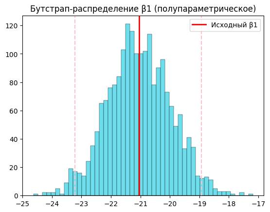

# импортируем библиотеки
import pandas as pd
import numpy as np
import matplotlib.pyplot as plt
import seaborn as sns
from sklearn.linear_model import LinearRegressionМаркетинговый анализ с использованием метода bootstrap (“бутстрап”)
Для этого задния я буду использовать базу данных сети продуктовых магазинов, скачанную с сайта kaggle
Этот датасет содержит информацию о 2240 клиентах и о шести рекламных кампаниях, причём первые пять рекламных акций - подготовительные, а последняя - целевая.
Поля, которые содержит таблица:- Реакция клиентов на рекламные акции
- AcceptedCmp1 — принял ли клиент предложение в первой кампании, 0 или 1
- AcceptedCmp2 — принял ли клиент предложение во второй кампании, 0 или 1
- AcceptedCmp3 — принял ли клиент предложение в третьей кампании, 0 или 1
- AcceptedCmp4 — принял ли клиент предложение в четвёртой кампании, 0 или 1
- AcceptedCmp5 — принял ли клиент предложение в пятой кампании, 0 или 1
- Response — принял ли клиент предложение в последней (целевой) кампании, 0 или 1
- Информация о клиентах
- DtCustomer - дата, когда клиент стал “известным” для компании, например получил карту лояльности или зарегестрировался на сайте
- Education — уровень образования клиента
- Marital — семейное положение клиента
- Kidhome — количество маленьких детей в семье клиента
- Teenhome — количество подростков в семье клиента
- Доход — годовой доход домохозяйства клиента
- Информация о тратах клиента на определённые виды продуктов
- MntFishProducts — сумма, потраченная на рыбную продукцию за последние 2 года
- MntMeatProducts — сумма, потраченная на мясную продукцию за последние 2 года
- MntFruits — сумма, потраченная на фруктовую продукцию за последние 2 года
- MntSweetProducts — сумма, потраченная на сладкие продукты за последние 2 года
- MntWines — сумма, потраченная на винную продукцию за последние 2 года
- MntGoldProds — сумма, потраченная на золотые изделия за последние 2 года
- Поведение клиента
- Complain — 1, если клиент жаловался в течение последних 2 лет
- NumDealsPurchases — количество покупок, совершённых со скидкой
- NumCatalogPurchases — количество покупок, совершённых по каталогу
- NumStorePurchases — количество покупок, совершённых непосредственно в магазинах
- NumWebPurchases — количество покупок, совершённых через веб-сайт компании
- NumWebVisitsMonth — количество посещений веб-сайта компании за последний месяц
- Recency — количество дней с момента последней покупки
# импортируем данные
data = pd.read_csv('/Users/alferova_tv/Documents/Statistics/marketing/archive/marketing_campaign.csv', sep=';')
data| ID | Year_Birth | Education | Marital_Status | Income | Kidhome | Teenhome | Dt_Customer | Recency | MntWines | ... | NumWebVisitsMonth | AcceptedCmp3 | AcceptedCmp4 | AcceptedCmp5 | AcceptedCmp1 | AcceptedCmp2 | Complain | Z_CostContact | Z_Revenue | Response | |
|---|---|---|---|---|---|---|---|---|---|---|---|---|---|---|---|---|---|---|---|---|---|
| 0 | 5524 | 1957 | Graduation | Single | 58138.0 | 0 | 0 | 2012-09-04 | 58 | 635 | ... | 7 | 0 | 0 | 0 | 0 | 0 | 0 | 3 | 11 | 1 |
| 1 | 2174 | 1954 | Graduation | Single | 46344.0 | 1 | 1 | 2014-03-08 | 38 | 11 | ... | 5 | 0 | 0 | 0 | 0 | 0 | 0 | 3 | 11 | 0 |
| 2 | 4141 | 1965 | Graduation | Together | 71613.0 | 0 | 0 | 2013-08-21 | 26 | 426 | ... | 4 | 0 | 0 | 0 | 0 | 0 | 0 | 3 | 11 | 0 |
| 3 | 6182 | 1984 | Graduation | Together | 26646.0 | 1 | 0 | 2014-02-10 | 26 | 11 | ... | 6 | 0 | 0 | 0 | 0 | 0 | 0 | 3 | 11 | 0 |
| 4 | 5324 | 1981 | PhD | Married | 58293.0 | 1 | 0 | 2014-01-19 | 94 | 173 | ... | 5 | 0 | 0 | 0 | 0 | 0 | 0 | 3 | 11 | 0 |
| ... | ... | ... | ... | ... | ... | ... | ... | ... | ... | ... | ... | ... | ... | ... | ... | ... | ... | ... | ... | ... | ... |
| 2235 | 10870 | 1967 | Graduation | Married | 61223.0 | 0 | 1 | 2013-06-13 | 46 | 709 | ... | 5 | 0 | 0 | 0 | 0 | 0 | 0 | 3 | 11 | 0 |
| 2236 | 4001 | 1946 | PhD | Together | 64014.0 | 2 | 1 | 2014-06-10 | 56 | 406 | ... | 7 | 0 | 0 | 0 | 1 | 0 | 0 | 3 | 11 | 0 |
| 2237 | 7270 | 1981 | Graduation | Divorced | 56981.0 | 0 | 0 | 2014-01-25 | 91 | 908 | ... | 6 | 0 | 1 | 0 | 0 | 0 | 0 | 3 | 11 | 0 |
| 2238 | 8235 | 1956 | Master | Together | 69245.0 | 0 | 1 | 2014-01-24 | 8 | 428 | ... | 3 | 0 | 0 | 0 | 0 | 0 | 0 | 3 | 11 | 0 |
| 2239 | 9405 | 1954 | PhD | Married | 52869.0 | 1 | 1 | 2012-10-15 | 40 | 84 | ... | 7 | 0 | 0 | 0 | 0 | 0 | 0 | 3 | 11 | 1 |
2240 rows × 29 columns
I. Полупараметрический bootstrap
Используем его в регрессионном анализе. Проверим, есть ли зависимость между количеством детей в семье клиента и суммой, потраченной им на сладкие продукты за последние 2 года.
Интуитивно хочется предположить, что такая зависимость есть: больше детей - больше сладостей (линейная регрессия)
То есть, предполагаем, что существует такая функция y = 𝛽₀ + 𝛽₁x₁ + ⋯ + 𝛽ᵣxᵣ + 𝜀, где y - сумма трат на сладкое, x - количество детей в семье, 𝛽 - коэффициенты, 𝜀 - погрешность
data['num_children'] = data['Kidhome'] + data['Teenhome'] # новый столбец - общее количество детей
# создаём массивы из наших полей
x = np.array(data['num_children']).reshape(-1, 1) # независимая переменная
y = np.array(data['MntSweetProducts']) # зависимая переменная
model = LinearRegression().fit(x, y) # модель линейной регрессииё
beta0 = model.intercept_
beta1 = model.coef_[0]
# посмотрим коэффициенты модели
print("Intercept (β0):", model.intercept_)
print("Slope (β1):", model.coef_[0])
y_pred = model.predict(x)--------------------------------------------------------------------------- NameError Traceback (most recent call last) Cell In[1], line 1 ----> 1 data['num_children'] = data['Kidhome'] + data['Teenhome'] # новый столбец - общее количество детей 3 # создаём массивы из наших полей 4 x = np.array(data['num_children']).reshape(-1, 1) # независимая переменная NameError: name 'data' is not defined
Итерпретация: Результат получился неожиданный: количество детей, вопреки интуитивным догадкам, уменьшает траты клиента на сладкое.
Или буквально: траты на сладкое = 47.06 – 21.04 * число_детей - средние траты на сладости у клиента без детей - примерно 47 - каждый дополнительный ребёнок уменьшает траты на сладости примерно на 21
Такой результат может говорить о том, что семьи с детьми больше экономят и покупают в основном базовые продукты (молоко, хлеб, мясо). Также возможно, что в данных просто мало детей
print(data.groupby(['num_children'])['ID'].count())
print()
print(data.groupby('num_children')['MntSweetProducts'].mean())num_children
0 638
1 1128
2 421
3 53
Name: ID, dtype: int64
num_children
0 53.061129
1 20.295213
2 8.370546
3 6.622642
Name: MntSweetProducts, dtype: float64И правда, троих детей имеют всего 2,3% клиентов, и с увеличением детей уменьшается средняя сумма трат на сладости
# посмотрим качество модели
print(model.score(x, y))0.14679404935587625Количество детей объясняет примерно 14.7% вариации трат на сладкие продукты. Есть слабая зависимость, но для маркетинговых данных, где поведение клиента зависит от множества факторов это нормально.
Вывод: есть зависимость, но она слабая
# построим диаграмму рассеяния с линией регрессии
plt.figure(figsize=(4,4))
plt.scatter(x, y, alpha=0.4)
plt.plot(x, y_pred, color='red')
plt.xticks([0, 1, 2, 3])
plt.xlabel('Количество детей')
plt.ylabel('Траты на сладкие продукты')
plt.title('Зависимость трат на сладкое от количества детей')
plt.show()
Теперь усилим характеристики регрессии с помощью полупараметрического бутстрапа.
Для данного случая он подходиит больше других, так как x представляет собой несколько категорий (0, 1, 2, 3) и в бутстрап-выборках частоты категорий будут случайными, это будет искажать реальное распределение. В полупараметрическом бутстрапе мы будем бутстрапировать не сами выборки, а ошибку 𝜀,
Пошагово:
1. Находим остатки 𝜀
2. Перемешиваем остатки
3. Создаём новые значения y* = ŷ + ε
4. Обучаем регрессию на данных (x, y)
5. Сохраняем β₁*
6. Повторяем 2000
В итоге получаем:
- распределение β₁
- доверительный интервал
- вероятность того, что β₁ < 0
residuals = y - y_pred # остатки модели
B = 2000
boot_betas = []
n = len(y)
for _ in range(B):
# случайная выборка остатков с повторением
eps_star = np.random.choice(residuals, size=n, replace=True)
# генерируем новые y*
y_star = y_pred + eps_star
# обучаем регрессию на новых данных
model_star = LinearRegression().fit(x, y_star)
boot_betas.append(model_star.coef_[0])
boot_betas = np.array(boot_betas)
# Доверительный интервал
ci_low = np.percentile(boot_betas, 2.5)
ci_high = np.percentile(boot_betas, 97.5)
print('95% бутстрапный доверительный интервал для β1:', (ci_low, ci_high))
print('P(β1 < 0):', np.mean(boot_betas < 0))95% бутстрапный доверительный интервал для β1: (np.float64(-23.21931879471253), np.float64(-18.932129585990147))
P(β1 < 0): 1.0Интервал полностью отрицательный и довольно узкий.
Ни в одной бутстрап-выборке коэффициент β1 не оказался большим либо равным 0
Посроим график распределения коэффииентов β1
plt.hist(boot_betas, bins=50, edgecolor='black', linewidth=0.3, color='#6EDEED')
plt.axvline(beta1, color='red', linewidth=2, label='Исходный β1')
plt.axvline(ci_low, color='pink', linestyle='--')
plt.axvline(ci_high, color='pink', linestyle='--')
plt.title("Бутстрап-распределение β1 (полупараметрическое)")
plt.legend()
plt.show()
Резюме
В рамках линейной модели и имеющегося набора данных увеличение количества детей статистически значимо связано со снижением трат на сладкие продукты. Однако это не доказывает причинно-следственную связь и может быть результатом других факторов